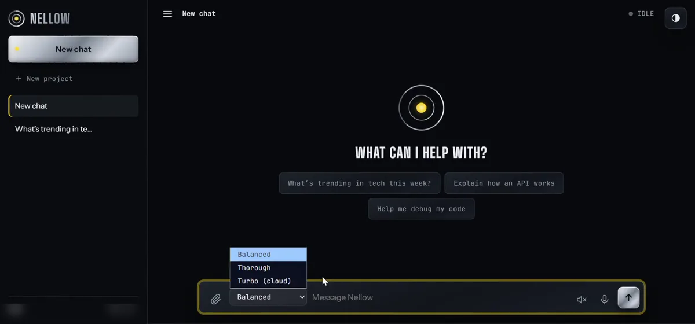
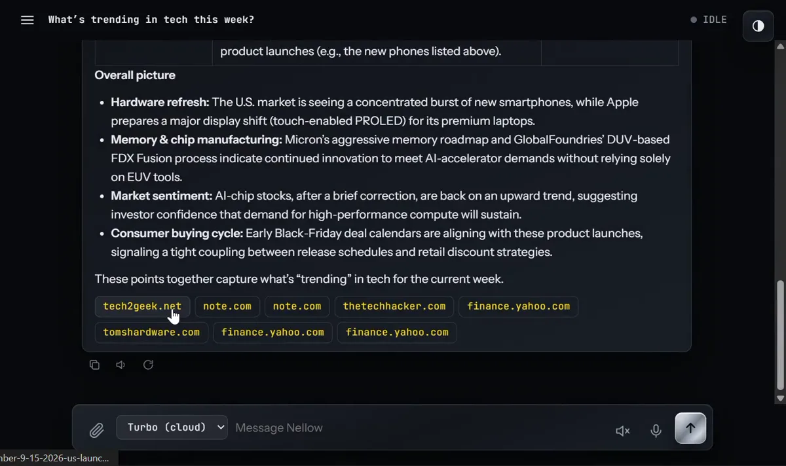
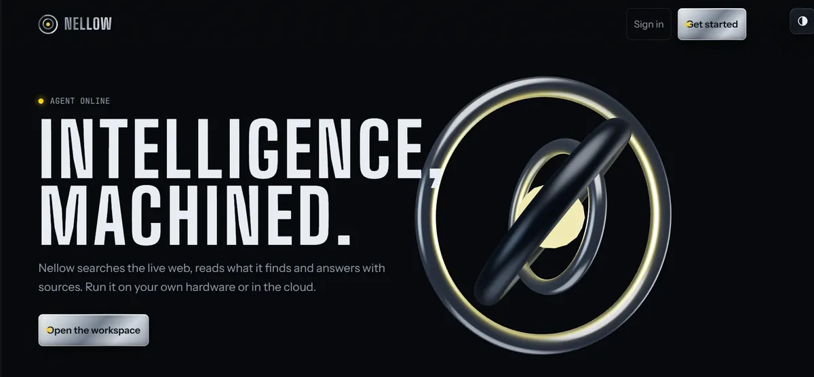

AI agent: web answers with sources
Nellow
An AI agent that searches the live web, reads what it finds and answers with sources. It runs on my own hardware or in the cloud, using a local Llama model for quick answers and a larger cloud model on Groq for harder reasoning.
- Role
- Designer and developer
- Runs on
- My own machine, with an optional cloud model
- Status
- Open source
- Stack
- Python, FastAPI, Ollama, Groq
The problem
Language models answer from what they learned in training, so they cannot know this week's news, and they rarely show where an answer came from. Nellow searches the web first, reads the pages and answers with links to its sources.
Objectives
- Answer questions about recent events by searching the web and the news.
- Show the sources behind every answer.
- Run on my own hardware with local models, with a cloud option for harder questions.
- Keep each person's chats and projects.
My role
I built the FastAPI back end (tools, model routing, streaming and storage) and the single-page web interface.
Main features
Three modes
Balanced runs Llama 3.2 3B locally. Thorough runs Qwen3 4B with step-by-step reasoning, or the cloud model when a key is set. Turbo uses gpt-oss-120b on Groq.
Search, news and reading tools
The model can search the web, search the news and read a page in full before it answers.
Answers with sources
The sources behind each answer are saved with it and shown as links.
Decides when to search
In the local modes, a small model first decides whether a message needs the web at all.
Questions about images
Attach an image and a local vision model (Gemma 3 4B) answers.
Accounts, chats and projects
Sign up or continue as a guest; conversations are kept per person and can be grouped into projects. Answers stream in as they are written.
How it's built
Open any part for the detail.
Back end
Python and FastAPI. Answers stream to the browser as server-sent events. SQLite stores users, chats, messages with their sources, and projects.
Models
Through Ollama: llama3.2:3b for routing and Balanced mode, qwen3:4b for Thorough, gemma3:4b for images. Through the Groq API: openai/gpt-oss-120b, falling back to gpt-oss-20b.
Tools
web_search and news_search use the ddgs library; read_page uses trafilatura to pull the readable text out of a page. The model can call tools over several rounds, up to a fixed limit, before it must answer.
Instructions
Today's date goes into every conversation. The model is told to check dates, ignore old articles for recent questions, state only what the sources say and say so when results are unclear or conflicting.
Accounts
Passwords are hashed with scrypt and a random per-user salt, and checked with a constant-time comparison.
Technologies
- Python
- FastAPI
- Ollama
- Llama 3.2
- Qwen3
- Gemma 3
- Groq API
- ddgs
- trafilatura
- SQLite
- HTML, CSS, JavaScript
Interface walkthrough
-

Pick a mode: Balanced, Thorough or Turbo. -

Each answer ends with its sources. -

The landing page.


Challenges and solutions
Not every message needs the web
In the local modes, a small model first reads the recent messages and replies SEARCH or not, at temperature 0 with a four-token limit, so greetings and general questions are answered directly.
Rate limits on the cloud model
When Groq returns a rate-limit or request-size error, Nellow switches to the smaller gpt-oss-20b model, which has its own limit. If a tool call fails, it retries once without tools.
Answers that stay with the sources
The instructions tell the model to state only what the sources say and to flag conflicts, and the app stores and shows the links it used, so every claim can be checked.
Outcome and status
Open source on GitHub. It runs locally with Ollama; Turbo mode needs a Groq API key.